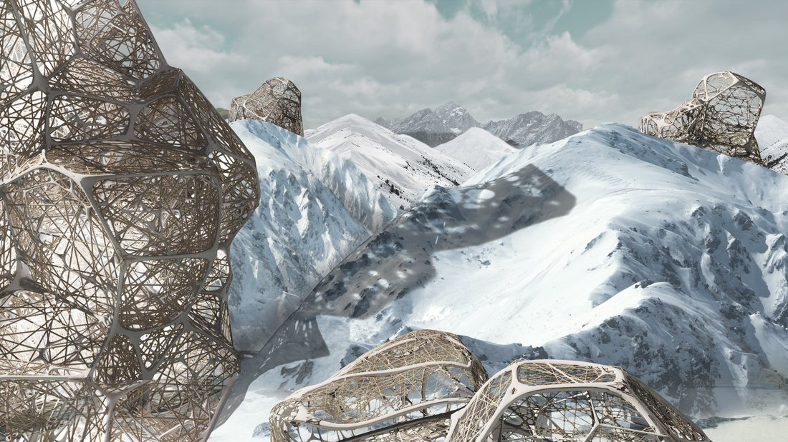
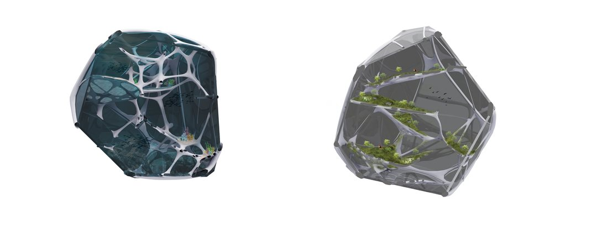
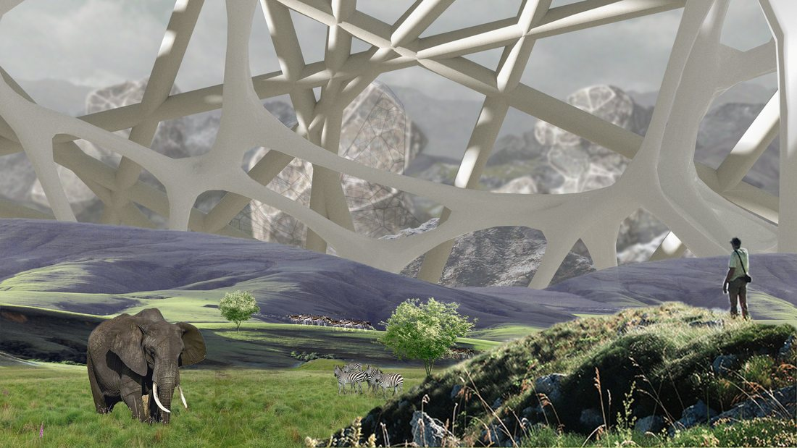
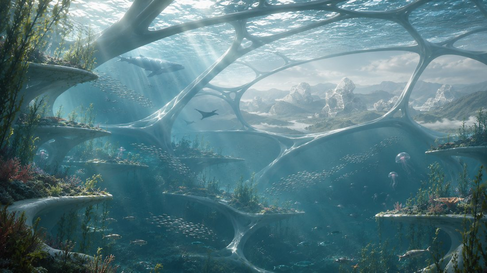
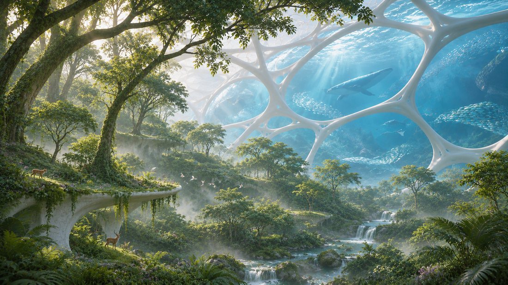
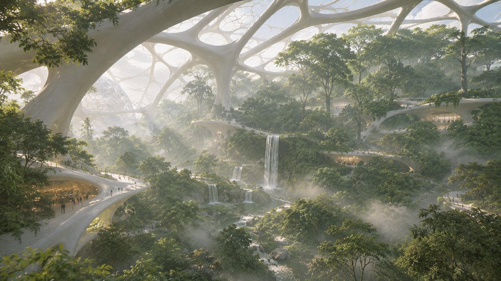

方舟就是为这样的未来设想的一种结构：一个能在极端气候下维持生命的可栖居系统。
 Siqi Zhang
Siqi Zhang
Siqi Zhang
Siqi Zhang

四十亿年里，地球的气候自有其节律。当前的模型指向一次地质时间尺度上的剧烈降温——一种与现有生态系统几乎不兼容的未来。

方舟就是为这样的未来设想的一种结构：一个能在极端气候下维持生命的可栖居系统。





它的主体是一具仿生骨架，外覆过滤膜，内部被划分为泰森多边形的单元。每一个单元，自成一个生态系统，拥有稳定的内部环境，又能与相邻的单元交换物质。森林、海洋、湿地、草原、城市——五种生态被压缩、映射进这副骨架之中，构成一个被收拢在单一生长形体里的、缩微的生物圈。
建筑在这里不是隔绝环境的庇护所，而是承载环境本身的容器。